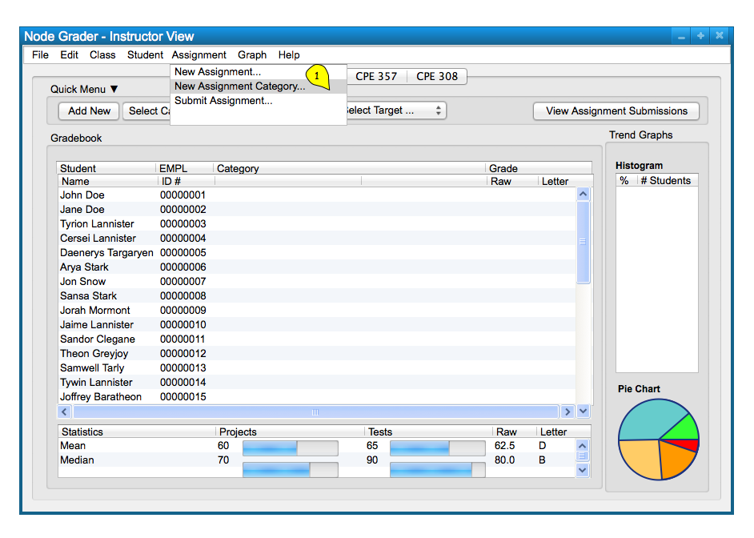
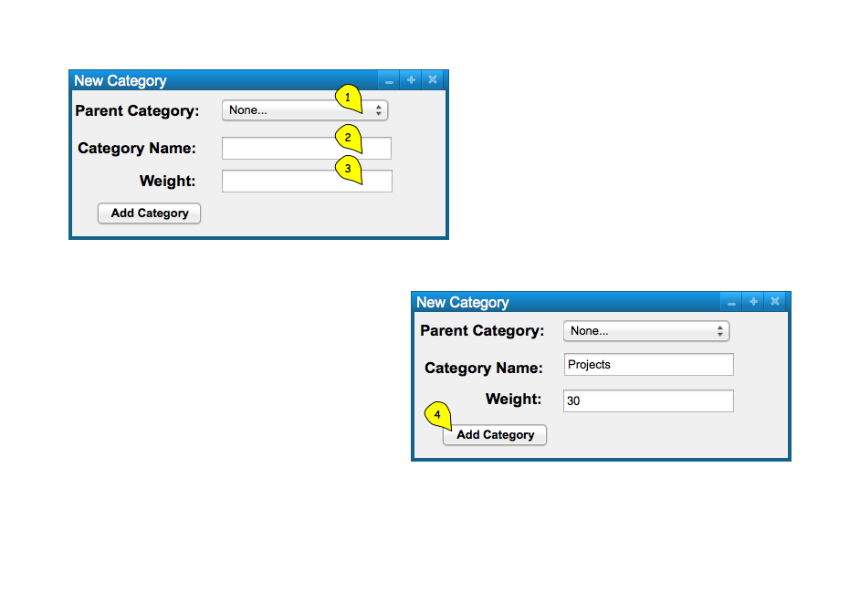
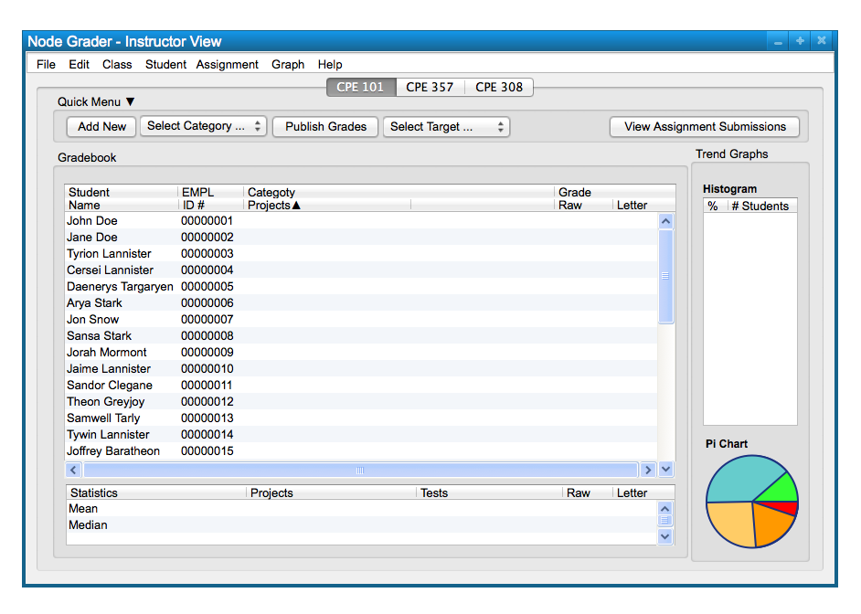
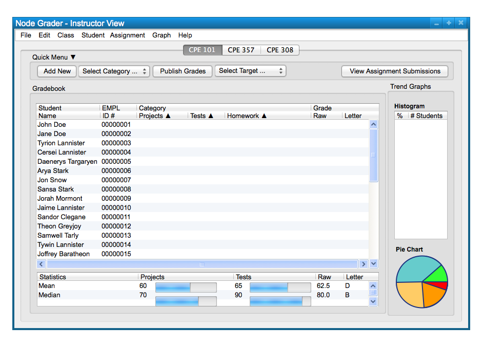

To create a new category, the user chooses the 'Assignment' menu
command. The user chooses
'New Assignment Category' from the list of items to add a new cateogry; this will take
the form of the following, Figure 1.

Figure 1: Add Category path.
To create a new category, the user chooses the 'Assignment' menu
command. The user chooses
'New Assignment Category' from the list of items to add a new category; this will take
the form of the following, Figure 1.

Figure 2: Add Category dialog.
The figure shows a dialog box for adding a new category. The dialog box only takes in a name in a text box, and an input box for the categories weight. It can be confirmed with the 'Add Category' button below. Confirming the category will create a new category in the spreadsheet.
When the user selects the 'Add Category' button, the system
inputs the newly created category in Figure 3.

Figure 3: Category Added view.
To add more categories follow the above steps. Figure 4 shows the results of adding two more categories.

Figure 4: Category Added view.